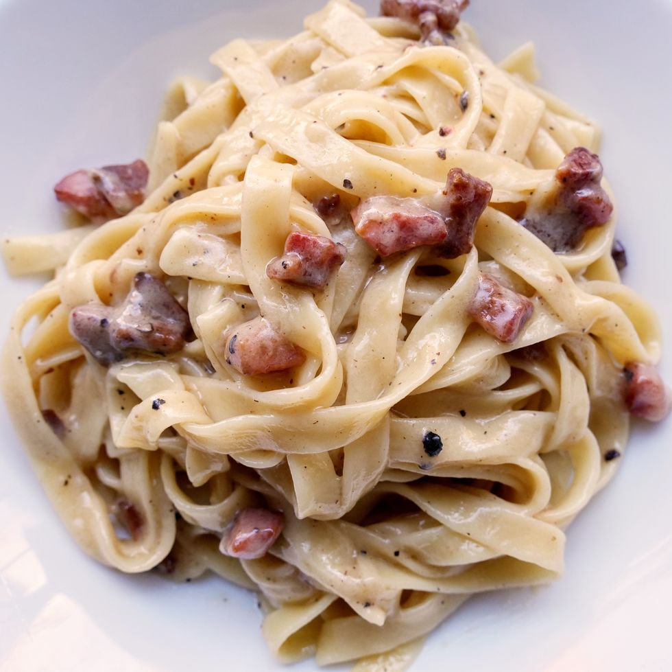

Pasta Alla Griciaa

Description
Pasta Alla Gricia completes the four classic pasta dishes of Rome. It's a classic for good reason: with only four ingredients, it's simple to make, easy to indulge.
Ingredients
- 4 oz.guanciale, diced into ¼” pieces s
- 3/4 tsp.freshly ground black pepper
- 4 c.water
- 3/4 tsp. Kosher salt
- 8 oz.tagliatelle
- 3 oz.freshly grated Pecorino (about 1 ½ cup), divided, plus more for serving
Steps
- In a large high-sided pan over medium-high heat, cook pancetta, stirring frequently, until deeply golden, 6 to 7 minutes. Remove from heat and, keeping the fat in the pan, use a slotted spoon to transfer guanciale to a plate. Add pepper to pan and stir to toast.
- Meanwhile, add water and salt to a medium-large pot and bring to a boil. Add pasta and cook, stirring to prevent sticking, until pliable, 2 to 3 minutes. Remove from heat
- Return pan to medium-low heat. Add 1 ¾ cup pasta water to pan and swirl to combine. Add parcooked pasta and ½ cup of Pecorino and stir to coat evenly. Once Pecorino is mostly melted, gradually stir in remaining Pecorino in 2 to 3 batches, adding more pasta water as necessary to keep sauce silky. Once pasta is al dente, remove from heat and continue stirring gently until sauce is smooth.
- Fold in cooked guanciale and serve with more Pecorino, if desired.
BON APPETITE!